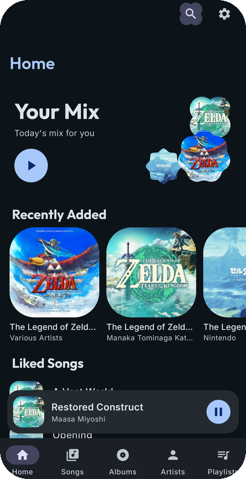
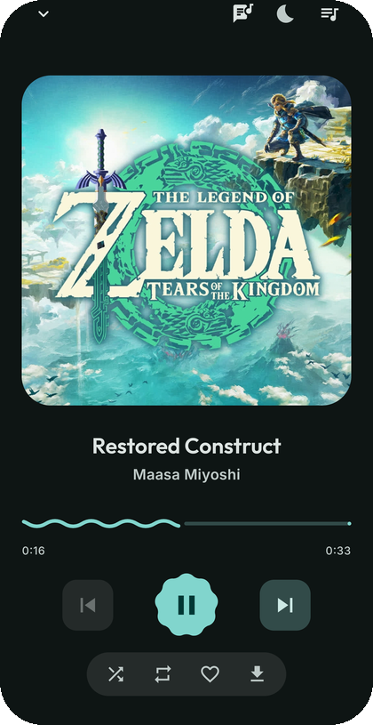
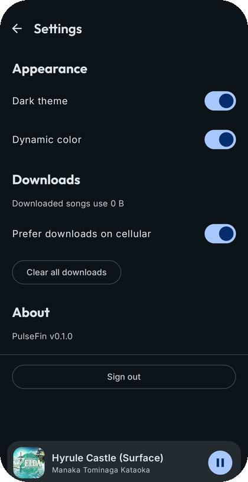

Browse your whole library
Home mix, Songs, Albums, Artists, and Playlists — all pulled straight from your Jellyfin server, no local-only copy to fall out of sync.
PulseFin is a native Android client for Jellyfin, built with Jetpack Compose and Material 3 Expressive. Your library, playlists, and playback history — served by the box you already run.


No half-finished mirror of the web UI — full library browsing, real playback control, and playlists that stay in sync everywhere.
Home mix, Songs, Albums, Artists, and Playlists — all pulled straight from your Jellyfin server, no local-only copy to fall out of sync.
Reorder the queue, play next or add to queue, view lyrics — and the queue survives an app restart.
Create, rename, delete, and reorder — changes round-trip with the Jellyfin web UI and every other client.
Keep tracks on-device for offline listening, restrict downloads to Wi-Fi, and see exactly how much space they use in Settings.
Play history and "continue listening" sync back to your server, the same as any first-party Jellyfin client.
No analytics, no crash reporting, no tracking of any kind. Nothing leaves your device except calls to your own Jellyfin server.
PulseFin leans into M3's newer "Expressive" language instead of a default Material theme.
Now Playing pulls a color seed straight from whatever album art is on screen and builds a full tonal palette live — the whole screen shifts to match the song. Play something else, and it shifts again.
A nine-sided cookie shape on the play button, squircle artwork, and shared-element transitions that morph album art from a list row into the full player instead of a hard cut. Haptics on the moments that matter — playback, favoriting, drag-to-reorder.

Local storage is a mirror of your Jellyfin library, not a parallel data model. No analytics or crash reporting are built in — nothing leaves your device except calls to your own server.
Enter the URL of the Jellyfin server you already run.
Use your existing Jellyfin account — nothing new to set up.
Your library, queue, and playlists, right where you left off.
Free, open source, and self-hosted. Grab the latest signed APK straight from GitHub Releases.
Download APK